Kvalitné granule, zdravý pes
Granule na mieru → Vytvorené s veterinármi
Vytvorené s veterinármi
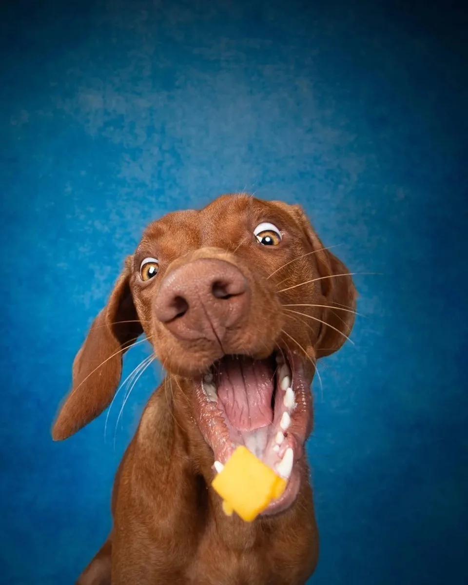
Granule na mieru
Vytvorené s veterinármi
Pridaj sa k zdravým psom
Staň sa súčasťou svorky spokojných zákazníkov
Ingrediencie, čo budeš závidieť.
Žiadne „mäso a mäsové deriváty“. Každá surovina má meno.
 Jeleň
Jeleň Tekvica
Tekvica Čučoriedky
Čučoriedky Vajcia
Vajcia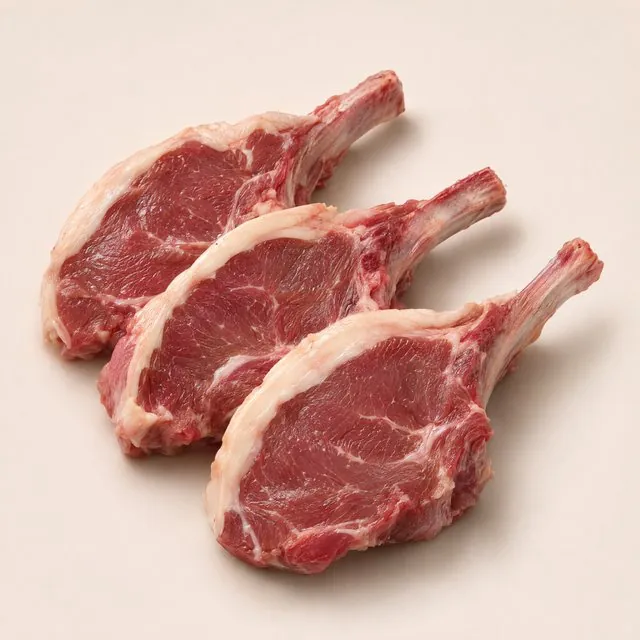
Jahňacie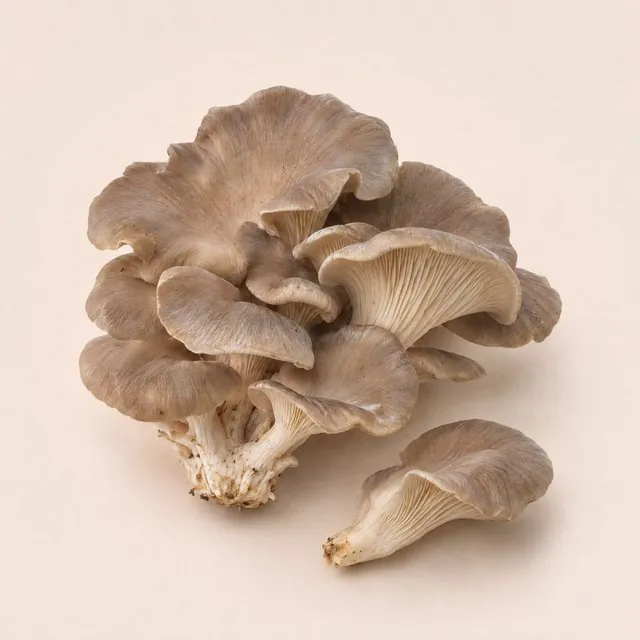
Hliva ustricová Pestrec mariánsky
Pestrec mariánsky Lososový olej
Lososový olej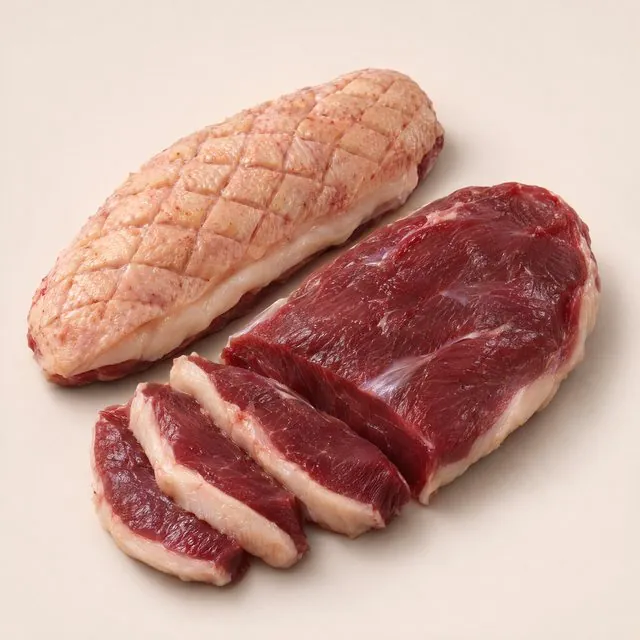
Kačka Šípky
Šípky Gaštany
Gaštany Harmanček
Harmanček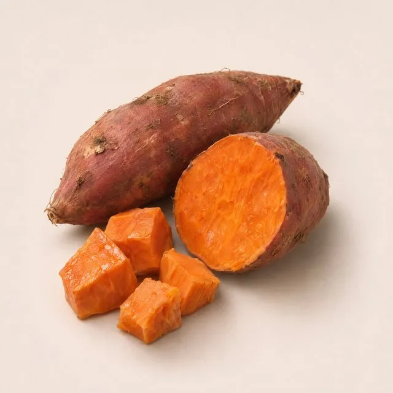
Batáty Jelení loj
Jelení loj Jablko
Jablko Fenikel
Fenikel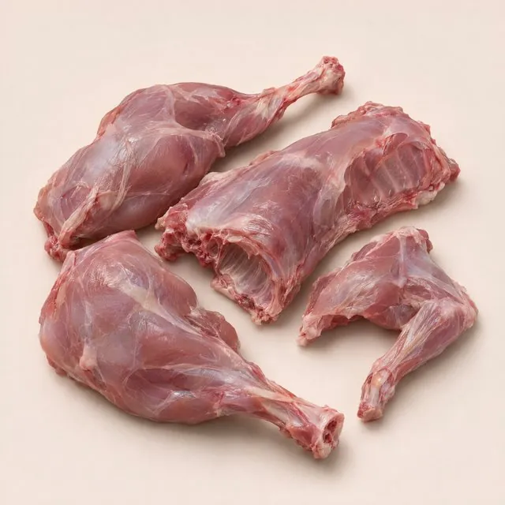
Králik Zemiaky
Zemiaky Bravčový tuk
Bravčový tuk Pivovarské kvasnice
Pivovarské kvasnice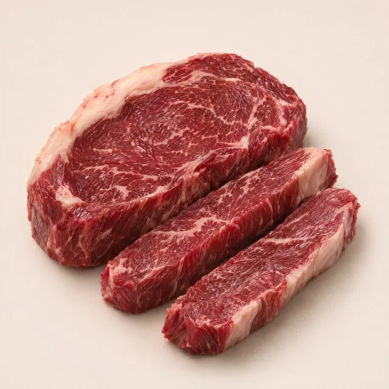
Hovädzie Ryža
Ryža Kačací tuk
Kačací tuk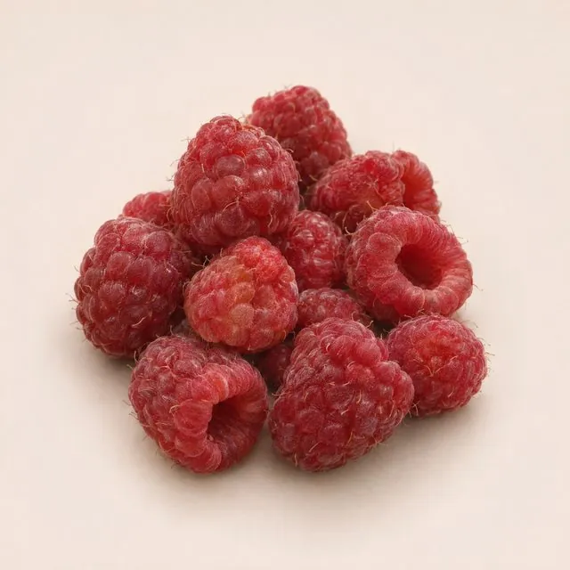
Maliny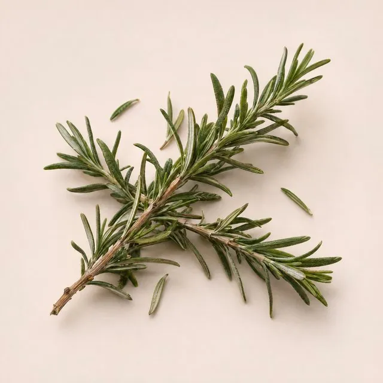
Rozmarín Yucca
Yucca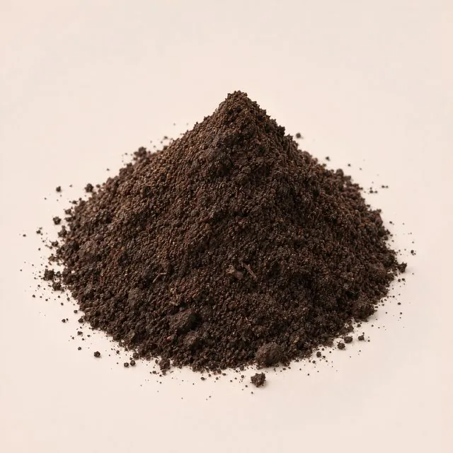
Humínové látky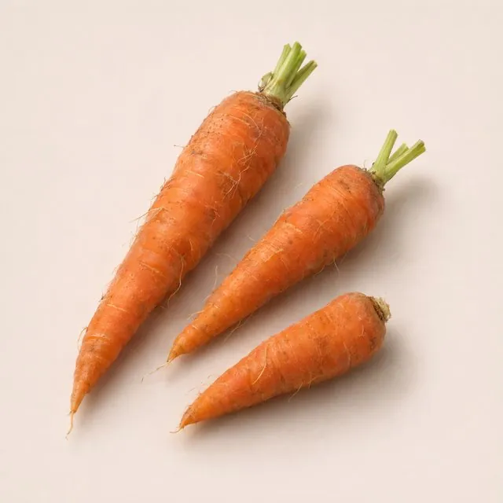
Mrkva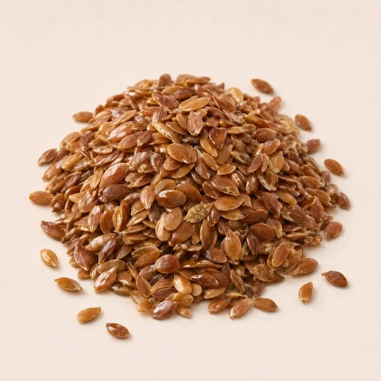
Ľan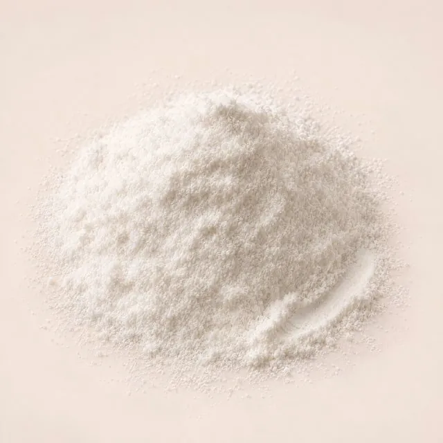
Kolagén Hus
Hus Konopné semiačka
Konopné semiačka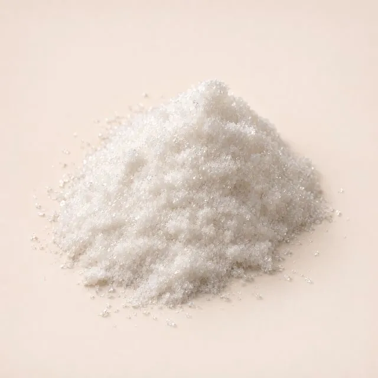
Glukozamín Morka
Morka Špenát
Špenát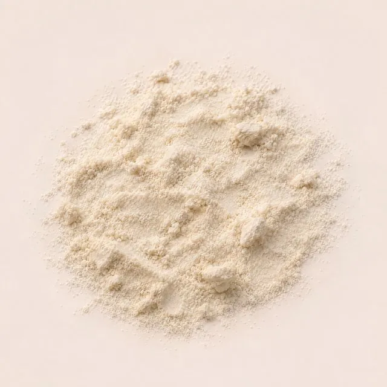
Chondroitín Petržlen
Petržlen Repa
Repa
Rozrež vrecko. Uvidíš rozdiel.
Bežné granule = ilustrácia typického zloženia lacných granúl z regálu, nie konkrétna značka.
Ty venčíš. My vozíme.
- 01
Povieš nám o svojom psovi
Plemeno, vek, váha, postava a koľko sa hýbe. Dve minúty.
- 02
Vyberieme granule
Granule s mäsom, ktoré tvojmu psovi sedí, a dávku spočítame na gramy.
- 03
Vrecko príde samo
Až k tebe domov. Skôr, než sa to staré minie.

Granule na mieru. Dávka na gramy. Vrecko príde samo.
Granule aj dávku vyberieme pre jedného konkrétneho psa. A keďže vieme, koľko denne zje, ďalšie vrecko pošleme skôr, než miska zostane prázdna.
Granula! znamená NULA ingrediencií, čo v granulách nemajú čo hľadať.
V našich granulách: nula pšenice, nula kukurice, nula sóje, nula hrachu a strukovín, nula kuracieho mäsa, nula kuracieho tuku, nula mäsovej múčky, nula pridaného cukru, nula palmového oleja, nula umelých farbív, nula umelých konzervantov, nula umelých aróm, nula GMO.
Čo jesť, koľko a prečo.
Čo sa pýtate.
Ako viete, čo je pre môjho psa najlepšie?+
Z plemena, veku, váhy, postavy a pohybu tvojho psa. Granule vyberieme podľa odporúčaní, ktoré vznikli s veterinármi, a dávku spočítame na gramy.
Čím sú granule na mieru iné?+
Granule aj dávka sedia konkrétnemu psovi, nie „priemernému psovi“ z tabuľky na vrecku.
Ako často mi príde nové vrecko?+
Podľa toho, koľko denne zje. Ďalšie pošleme tak, aby prišlo skôr, než sa to staré minie.
Ako prejsť na nové granule?+
Postupne. Približne 7 až 10 dní pridávaj do starého krmiva čoraz viac Granuly, kým nezostane len ona.
Kto granule vyrába?+
Slovenský výrobca krmív, ktorý sa im venuje od roku 1992. Receptúry navrhli veterinári so zameraním na výživu psov.
Buď pri tom prvý.
Momentálne vyrábame prvú várku. Zapíš sa vopred a prvé vrecko dostaneš o 30 % lacnejšie. Rezervácia je nezáväzná.
Ako sa volá tvoj pes?
Povedz nám o ňom za dve minúty. Granule aj dávku vyberieme my a vrecko príde samo.